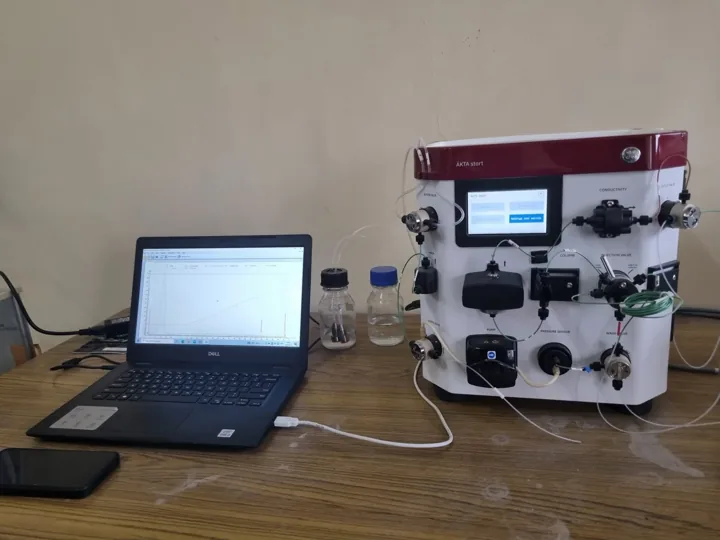

↗ View gallery · 05Software meets laboratory automation
Infinity Tech Resources × Institute of Science · Aurangabad
A collaboration exploring software support and robotic automation for chromatography with biotechnology researchers.
Explore the story
The work
At Infinity Tech Resources, participated in a research environment connecting software engineering with the Government Institute of Science Aurangabad’s Department of Biotechnology.
The contribution
Brought software and automation perspectives into discussions with biotechnology researchers about chromatography systems.
Link to this story